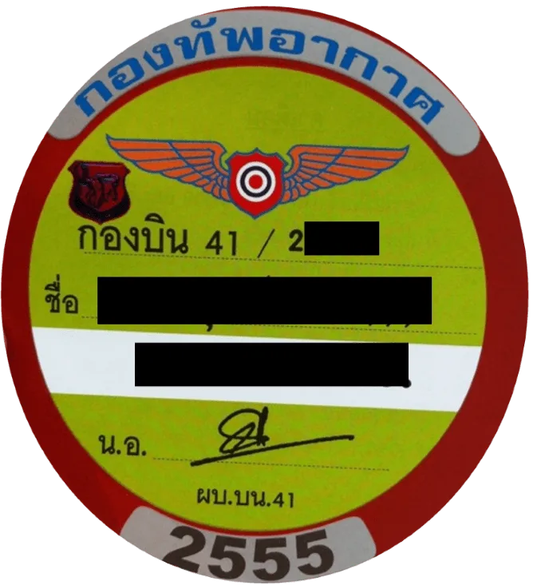
Wing 41 Pass
Here’s a great travel hack for getting around Chiang Mai! Getting from Nimman area to the airport usually sucks! Unless you have the Wing 41 Pass, well it’s actually a sticker. It gives you access to the private Air Force Base Road from the bottom of Nimman Road through to Mahidol Road. Access time 5am. 8pm.
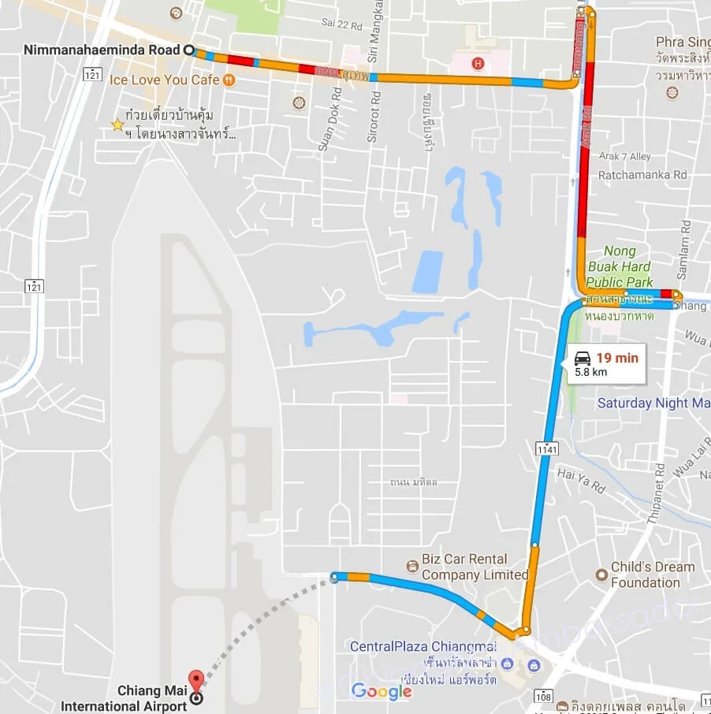
Via Old City. 20 minutes + depending on traffic
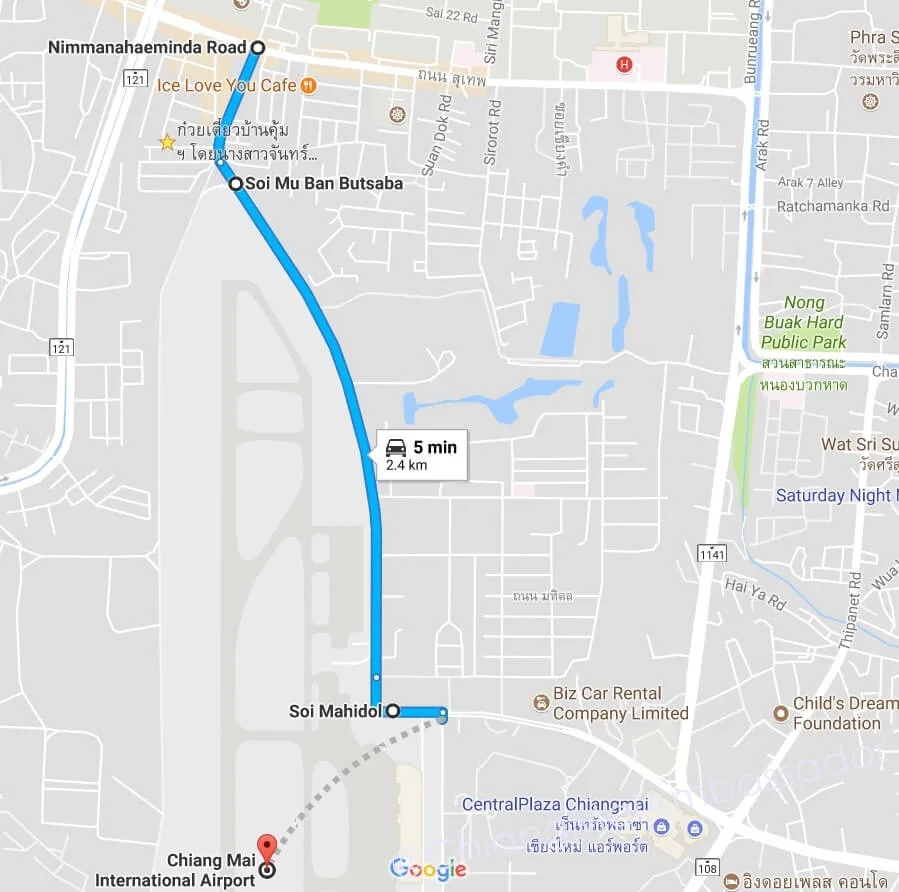
Using the Wing 41 Pass. 5 minutes maximum ALL THE TIME
I probably use this once a week because it makes travel from my condo to the airport, Hangdong and even Promenada much quicker than going through the old city or around the Superhighway, and much more so during the extended road works.
Every year, the Air Force, opens to accept applications for the passes in November and December. The stickers are picked up in January, February and March.
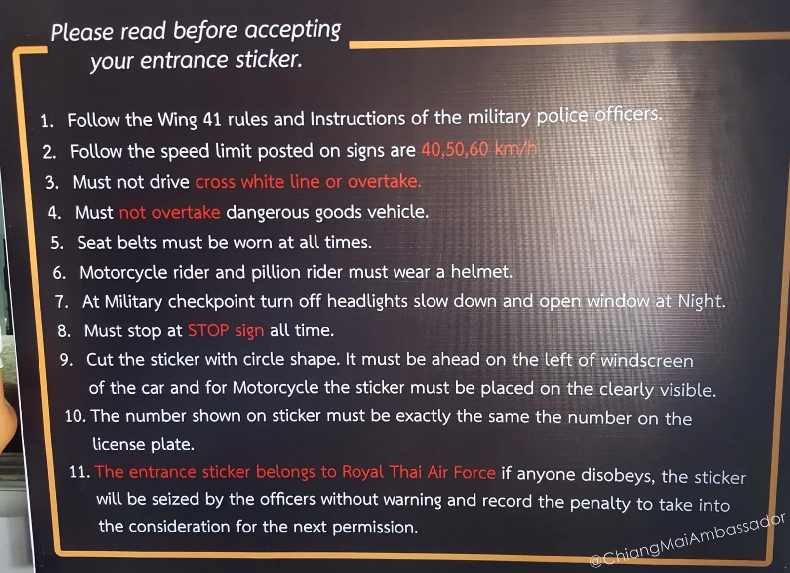
During November and December, it even allows for people to try it out as you can go without a current sticker as you are “applying” for a sticker, but really just cruising through.
You can do this many ways and number of visits. It will be 4 visits by the time I pick up my sticker, however you can usually do it in 2 visits.
Opening time for Wing 41 Pass Applications
The Office is open from 8:30am-11:30am and 13:30pm. 15:30pm. Applications Close December 25th!
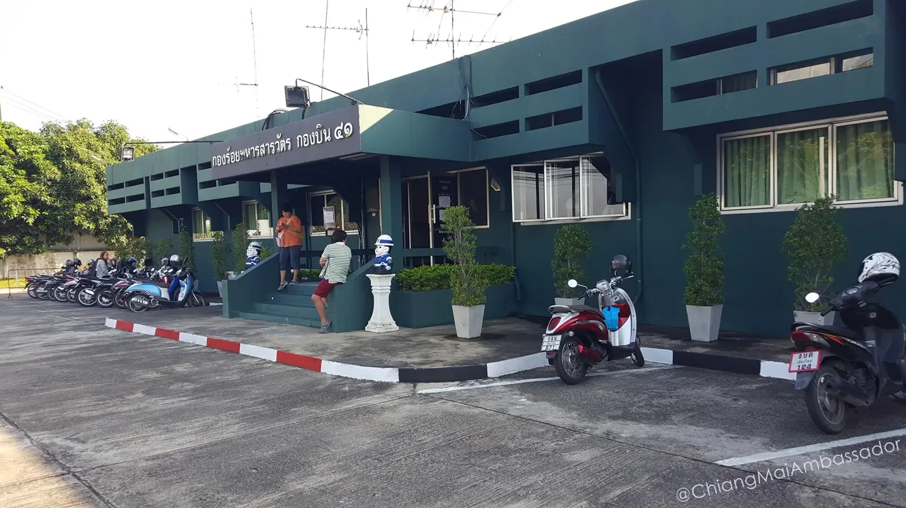

The Wing 41 Pass process in 2 visits
Before you go -
1. Photocopy your green/blue book (registration document) main page and sign
2. Photocopy your ID Card or Passport and sign both copies
Onsite
3. Get the Wing 41 Pass application form for 5 baht
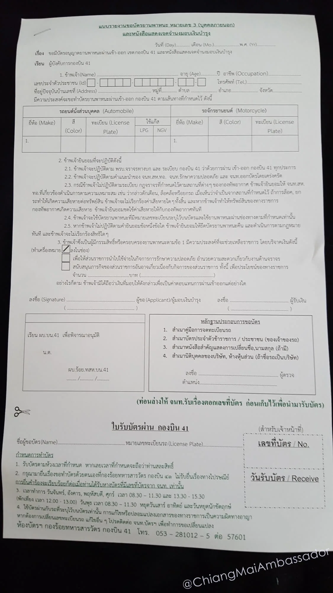
4. Complete the application form
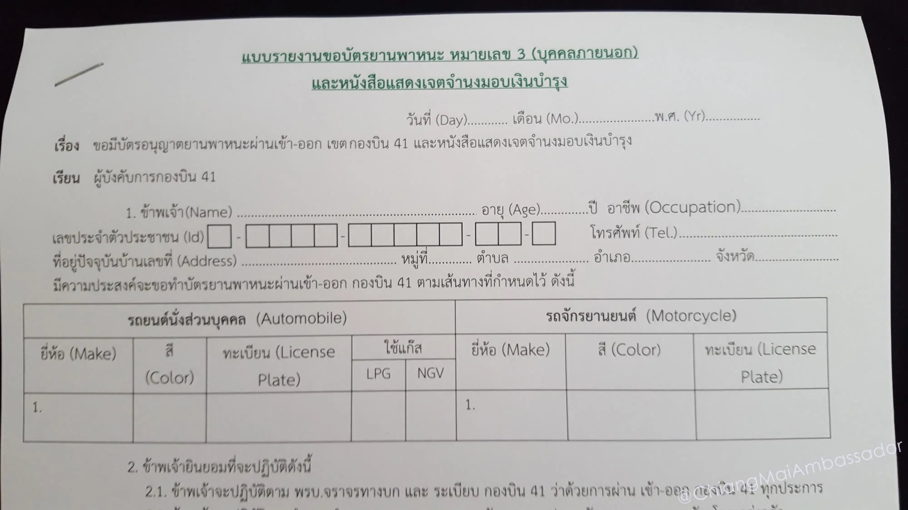
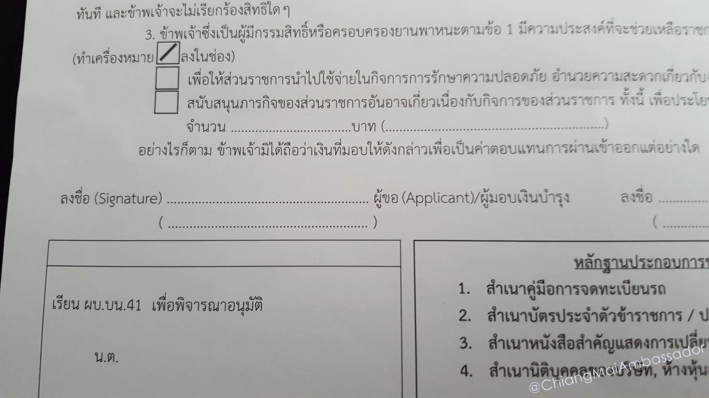
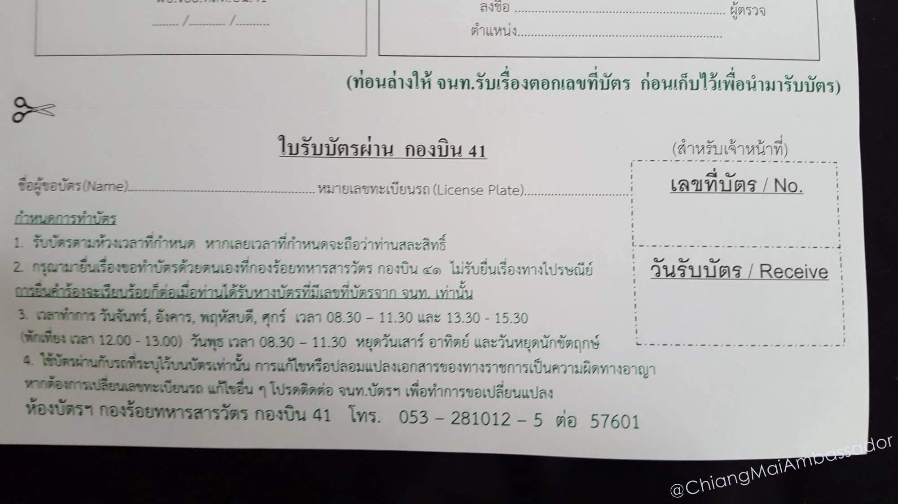
5. Get in the queue to have the documents checked
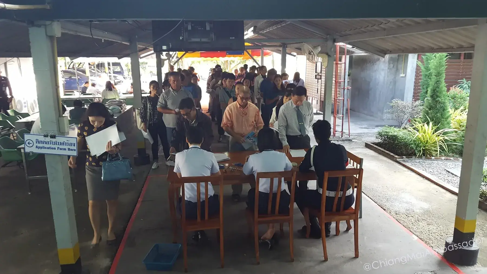
6. Get in the LONG queue to submit your documents. up to 90 minutes waiting
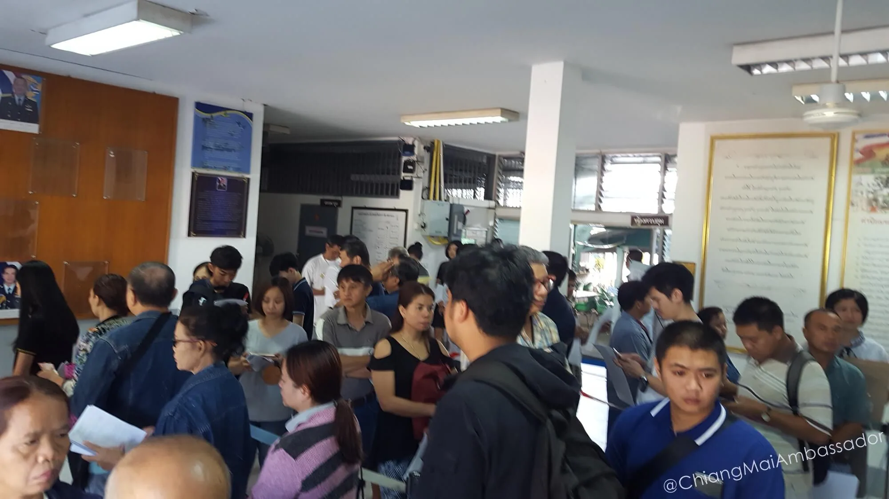
7. Submit application with 100 baht per vehicle
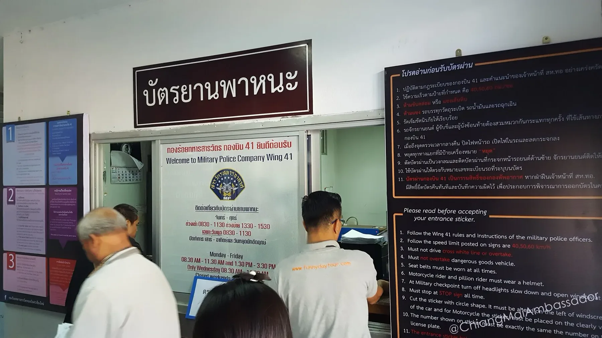
8. Go homeMy method. 4 visits
1. I grabbed the Wing 41 Pass application forms on the way through to a meeting 30th October. (1st Visit)
2. Photocopy your green/blue book (registration document) main page and sign
3. Photocopy your ID Card or Passport and sign both copies
4. Complete the application form (2nd Visit)
5. Get in the queue to have the documents checked.
6. The submission queue was 200 people. Asked if I could submit another day and they said fine.
7. Went and submitted my documents about 8:35am and there were maybe 20 people in the submission queue. Waited about 10 minutes. Submitted. (3rd Visit)
8. Go home.
By the time I left there were 50 people in the submission queue and 100+ in the checking queue.
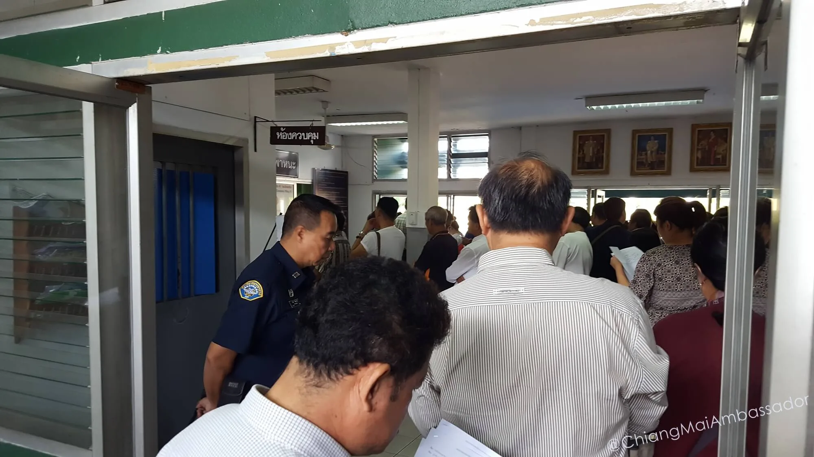
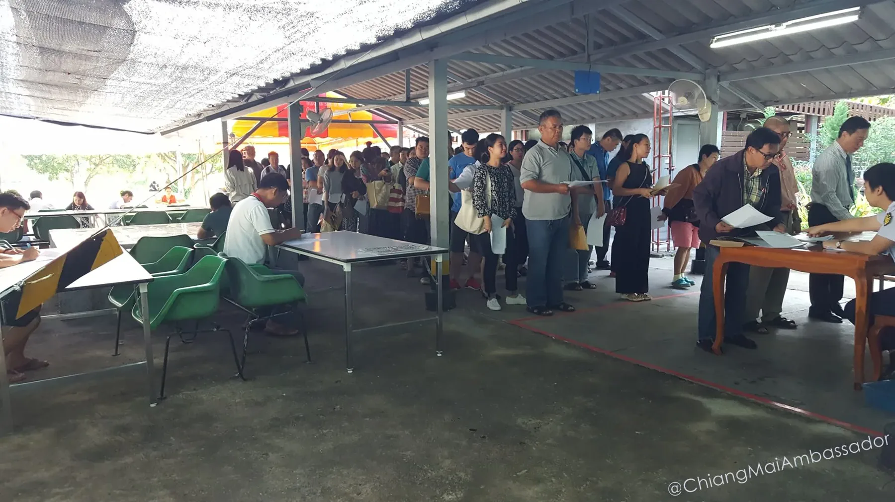
All up so far under 20 minutes, but 3 visits but I was going through anyway. If you want to do it in one visit, it could take a few hours.
I will pick up the Wing 41 Pass in January. MAKE SURE TO APPLY BEFORE CHRISTMAS - Applications Close December 25th!
Check out Chiang Mai Ambassador on Facebook!